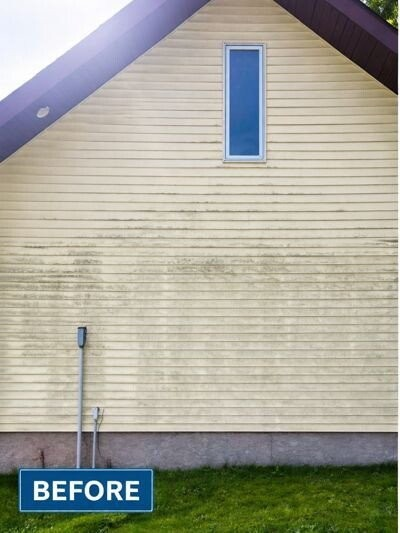
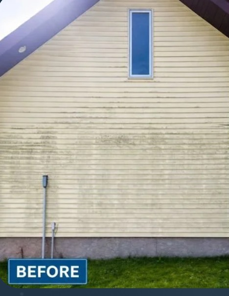
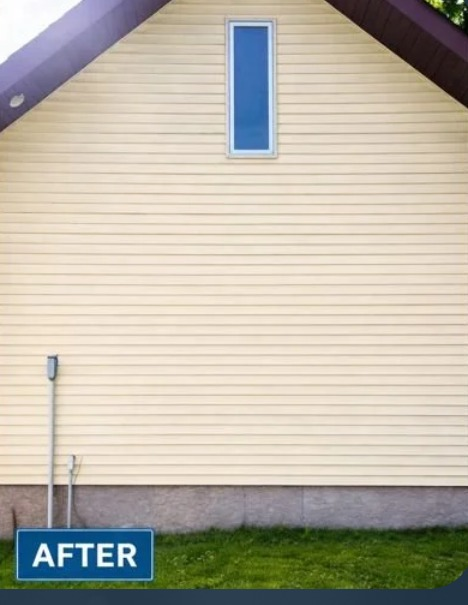
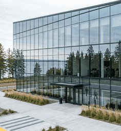
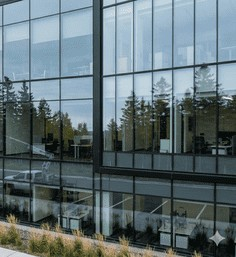
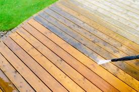
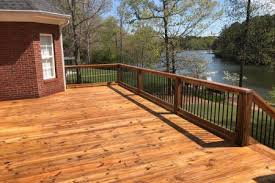

Real Results · No Filters
Before & After Gallery
Genuine project photos from soft washing, concrete cleaning, deck restoration, window cleaning, and commercial work across the Northland.


Soft WashingResidential Soft WashClick to enlarge
Soft WashingFull House WashClick to enlarge


Soft WashingExterior RestorationClick to enlarge
Soft WashingStucco & MasonryClick to enlarge
Soft WashingRoof Soft WashingClick to enlarge
ConcreteDriveway CleaningClick to enlarge
CommercialCommercial FlatworkClick to enlarge
Window CleaningResidential WindowsClick to enlarge


Window CleaningCommercial StorefrontClick to enlarge
Deck & FenceDeck RestorationClick to enlarge


Deck & FenceFence & Rail BrighteningClick to enlarge
Deck & FencePatio Beside DeckClick to enlarge